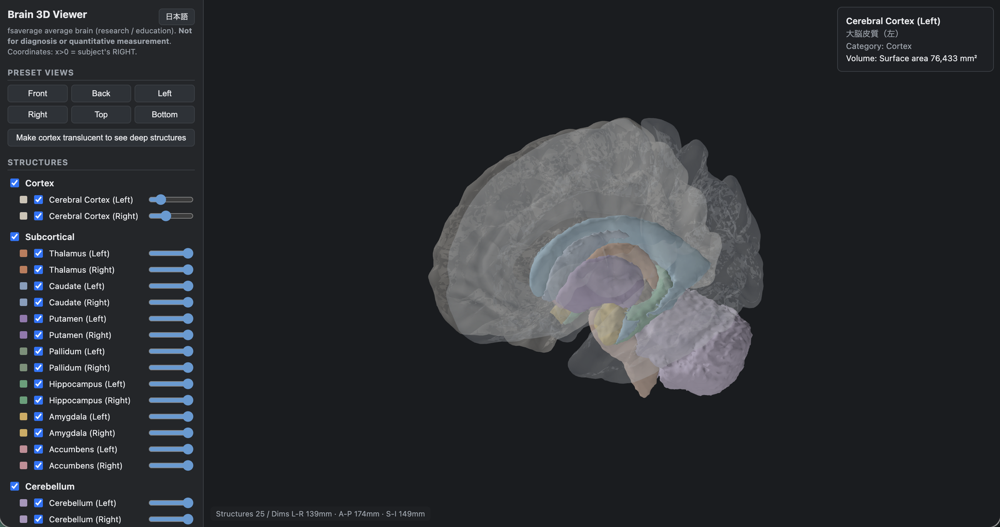

Project 01 · Independent · 2026
An anatomically accurate 3D model of the human brain, and a viewer that opens it in any browser. Twenty-five structures reconstructed from the FreeSurfer fsaverage template — each kept as its own mesh, so you can pull the brain apart, slice it, and read the volume of anything you click.

The viewer — cortex made translucent to expose the subcortical nuclei, cerebellum and ventricles. Structure tree on the left, live readout on the right.
Textbook diagrams show the brain in flat slices, one plane at a time. Studying cognitive neuroscience, I kept running into structures — the pallidum, the ventral diencephalon, the inferior horn of the lateral ventricle — that I could name but could not picture in relation to each other. So I built the thing I wanted to look at.
The requirement I set was that it had to be honest. Plenty of brain renders look impressive and quietly distort anatomy to get there. I wanted every number in the model to be traceable to a published source, and every place it disagrees with the literature to be written down rather than smoothed over.
A structure tree groups all 25 meshes by category. Toggle visibility, set opacity per structure, or make the cortex translucent in one click to expose everything underneath.
Three orthogonal clipping planes — sagittal, coronal, axial — with a position slider and direction flip. Cut faces are filled with each structure's own colour, so a section reads like an atlas plate rather than a hollow shell.
Click any structure and it highlights, then reports its English and Japanese name, category, measured volume in mm³, and how far that volume sits from published reference ranges.
A Japanese / English toggle switches the entire interface and every anatomical name live, without losing the current view. Six anatomically correct preset views, a millimetre grid, world-anchored L/R labels, and PNG export with optional transparency.
Both the cortical surfaces and the deep structures come from the same fsaverage subject — the pial surfaces and the aseg segmentation. Because they share a subject, they share a coordinate space, and they align with no spatial registration step at all. That single decision removed an entire class of alignment error.
vox2ras-tkr, write one GLB with normals and 25 named meshes.The whole pipeline is one script. A clean machine goes from nothing to a finished model in about five minutes, including the automatic fsaverage download.
Volumes are as measured, uncorrected. Reference ranges are representative adult normal values from MRI manual-tracing studies; "diff" is the distance from the midpoint of that range.
| Structure | Label | Faces | Measured (mm³) | Reference (mm³) | Diff |
|---|---|---|---|---|---|
| Cerebral cortex — L | lh.pial | 60,000 | 76,433 mm² area | — | — |
| Cerebral cortex — R | rh.pial | 60,000 | 76,361 mm² area | — | — |
| Thalamus — L | aseg 10 | 5,000 | 8,610 | 6,000–8,000 | +23.0% |
| Thalamus — R | aseg 49 | 5,000 | 8,589 | 6,000–8,000 | +22.7% |
| Caudate — L | aseg 11 | 5,000 | 3,627 | 3,000–4,000 | +3.6% |
| Caudate — R | aseg 50 | 5,000 | 3,852 | 3,000–4,000 | +10.1% |
| Putamen — L | aseg 12 | 5,000 | 7,242 | 4,000–5,500 | +52.5% |
| Putamen — R | aseg 51 | 5,000 | 6,872 | 4,000–5,500 | +44.7% |
| Pallidum — L | aseg 13 | 2,776 | 1,765 | 1,500–2,200 | −4.6% |
| Pallidum — R | aseg 52 | 2,792 | 1,804 | 1,500–2,200 | −2.5% |
| Hippocampus — L | aseg 17 | 5,000 | 5,165 | 3,000–4,500 | +37.7% |
| Hippocampus — R | aseg 53 | 5,000 | 5,387 | 3,000–4,500 | +43.7% |
| Amygdala — L | aseg 18 | 2,856 | 1,941 | 1,200–1,900 | +25.2% |
| Amygdala — R | aseg 54 | 3,132 | 2,228 | 1,200–1,900 | +43.7% |
| Accumbens — L | aseg 26 | 1,712 | 778 | 400–700 | +41.5% |
| Accumbens — R | aseg 58 | 1,672 | 757 | 400–700 | +37.6% |
| Cerebellum — L | aseg 8+7 | 22,000 | 77,618 | 55,000–75,000 | +19.4% |
| Cerebellum — R | aseg 47+46 | 22,000 | 77,851 | 55,000–75,000 | +19.8% |
| Brainstem | aseg 16 | 8,000 | 26,629 | 20,000–35,000 | −3.2% |
| Ventral diencephalon — L | aseg 28 | 6,000 | 5,142 | — | — |
| Ventral diencephalon — R | aseg 60 | 6,000 | 5,076 | — | — |
| Lateral ventricle — L | aseg 4+5 | 12,000 | 22,020 | — | — |
| Lateral ventricle — R | aseg 43+44 | 12,000 | 20,176 | — | — |
| Third ventricle | aseg 14 | 3,244 | 1,941 | — | — |
| Fourth ventricle | aseg 15 | 3,752 | 2,237 | — | — |
| Total | 25 structures | 269,936 |
Machine-readable equivalents — colour, centroid, reference source — live in structures.json.
Measured volumes run systematically larger than manual-tracing references — putamen by roughly 50%, hippocampus by 40%, thalamus by 23%. I could have closed that gap by shrinking the masks or tuning the isosurface threshold, and the table would have looked much better.
I didn't, for two reasons. The difference is not an error — it comes from an averaged brain having blurred boundaries, and from FreeSurfer's aseg defining structure boundaries by a different protocol than manual tracing. And correcting it would distort the anatomical shape, which is the one thing the model exists to represent. So the numbers are published as measured, with the reference value and the difference beside them.
Stated because a model is only useful if you know where it stops.
I tested Harvard-Oxford first. It has no cerebellar parcellation, and it lives in FSL's MNI152 space — a different space from the fsaverage cortical surface — which left a few-millimetre misalignment. The aseg segmentation covers subcortical structures, cerebellum, brainstem and ventricles, and shares a coordinate space with the pial surfaces. A single-subject aseg would sit closer to published volumes, but it would break alignment with the fsaverage surface, which defeats the purpose.
The pial surface is already defined in tkrRAS, and aseg converts into it with vox2ras-tkr. The two overlay with no transform, so there is nowhere for a registration error to hide.
Marching cubes runs at a level fixed to 0.5 for every structure. Varying it per structure is an easy way to make individual volumes land closer to the literature — and an easy way to stop being able to explain what the model actually represents.
Built from FreeSurfer's fsaverage subject — {lh,rh}.pial for the cortical surfaces and aseg.mgz for everything deep. Distributed under the FreeSurfer Software License: free for research use, not for clinical use. This model is a derivative work and carries the required attribution. The AAL atlas is deliberately not used, as its terms would complicate publication. Three.js is MIT-licensed.